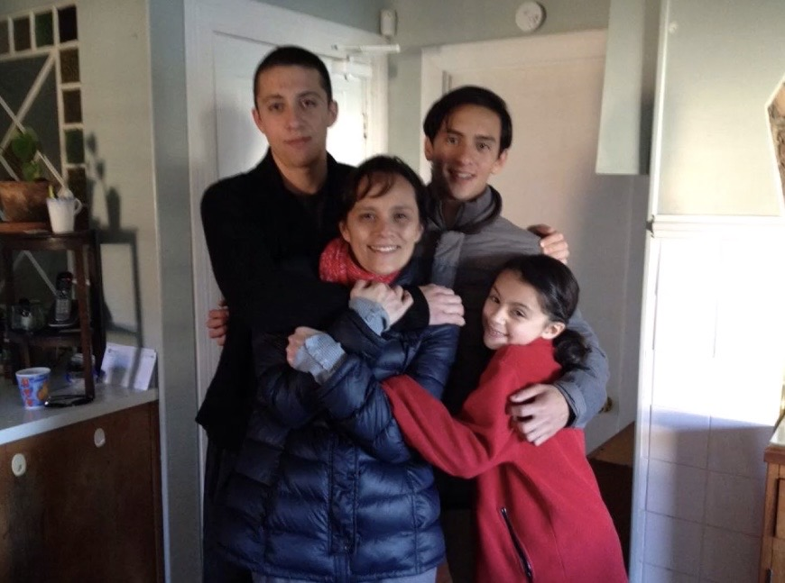
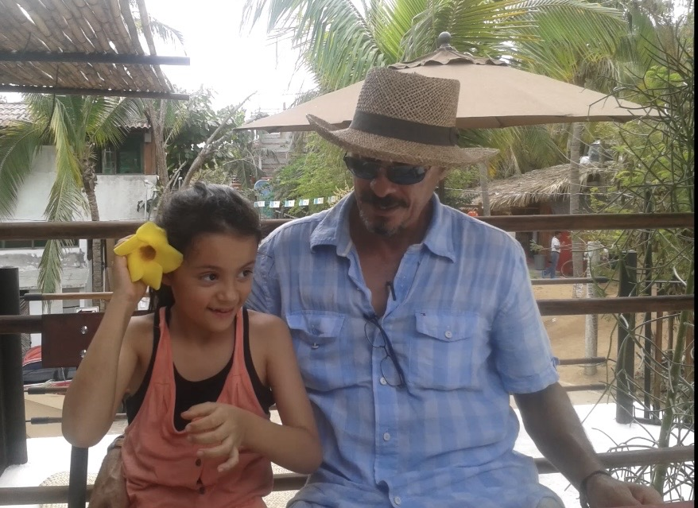

A VISUAL CHAPTER / FAMILY & HERITAGE
The people
who shaped my story.
Before I could understand what heritage meant, I experienced it through the people around me.
These photographs hold moments, memories and connections that form part of my story. They remind me that identity is not only shaped by the places we come from, but also by the people who have been part of our lives.




THE BEGINNING OF MY STORY